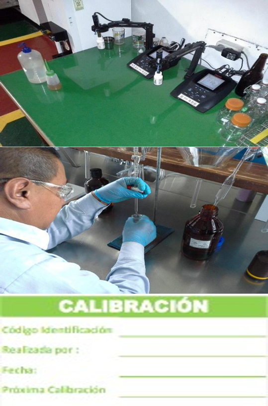

Busca asegurar que todas las instalaciones ABI suministren productos terminados dentro de especificación y cumplimiento de requisitos legales. Identifica etapas de procesos, Define pautas y actividades para la correcta ejecución de procesos e incluye requisitos de gestión de laboratorios y técnicas estadísticas.
Busca garantizar que todos los documentos y registros se gestionen adecuadamente para garantizar el cumplimiento legal en el control y almacenamiento para todas las operaciones, incluye aspectos de: Requisitos mínimos de Reportes, Requisitos de Control de Registros, Uso Control Estadístico de Proceso y el análisis de sus resultados, Gestión y Control de Datos y Gráficas de puntos (DOT Graphs) (Revisión de los Datos de Calidad)
Claridad sobre parámetros analizados en los roles que desempeñen y en los que le entrega su área proveedora/cliente.
Capacidad de discernir entre un parámetro de liberación (RCI), un parámetro de control (CI) y un parámetro de control secundario (SCI)
Seguimiento a parámetros mediante el uso de cartas de control y estar familiarizado o tener disponible a mano el plan de reacción para desviaciones en un parámetro, especialmente si es RCI, y cómo éste afecta calidad o inocuidad del producto entregado a su área cliente.
Identificar comportamientos anómalos en datos de parámetros analizados
Identificar lineamientos generales de la documentación, registros y datos tomados en físico y/o electrónico
Parámetros que impactan directamente su proceso (teniendo en cuenta el mapa de procesos) y su nivel de impacto.
Plan de reacción y protocolos de comunicación
Administración de documentos, registros y bases de datos.
El bloque de Métodos de Calidad se enfoca en varias políticas :
Métodos de Calidad individuales: Fisicoquímico, Microbiología, Calidad de envasado, Materias primas, Materiales de empaque.
Política de Laboratorio Fisicoquímico & Política de Laboratorio de Microbiología.
Política de Equipos de Calidad.
Política de Reglas de Verificación.
Política de Validación de resultados.
Métodos analíticos estandarizados (SOP) desde la recolección de muestras hasta la elaboración de informes, diseñados para garantizar que los resultados del análisis de laboratorio sean consistentes, comparables, precisos y dentro de los límites de precisión especificados.
Las políticas de laboratorio brindan orientación tanto para la seguridad de las personas que trabajan en el laboratorio como para los estándares que deben seguirse para garantizar un análisis preciso de las muestras tanto en los laboratorios fisicoquímicos como microbiológicos, así como en todos los laboratorios satélites (OWS) de las áreas operativas.
Requisitos de Seguridad
Etiquetado de Reactivos
Condiciones de los Equipos
Diseño General y Organización
Seguimiento a Prácticas Microbiológicas
Una regla o rutina de verificación es una compilación de preguntas sobre los requisitos de pruebas críticas que deben estar vigentes cuando se realiza un análisis y se utiliza para verificar la validez y la credibilidad de un resultado
Una rutina de verificación ayuda a identificar una desviación, anomalía o problema, pero no siempre identifica la "causa raíz". La causa raíz se encuentra utilizando técnicas de resolución de problemas, como un DTO (OWD) o reporte de anormalidad.
Calidad del producto es que todos los resultados de calidad producidos por los laboratorios y por todos los equipos de medición y registro en línea sean precisos y reproducibles.
Es válida para todos los equipos de calidad presentes en una planta.
Listado de Equipos.
Registros de Calibración.
Calificación de los Equipos.
Se deben seguir y documentar adecuadamente las rutinas de calibración (frecuencia, tipo, SOP ) como se indica en las normas de calibración de VPO y también como se define en los métodos de calidad.
En la validación de resultados se definen las políticas y los procedimientos de AB-InBev en la validación del rendimiento de los laboratorios Fisicoquimicos, utilizando pruebas de competencia .
El sistema BWC es el punto de referencia para la validación de esos resultados. Las muestras de control de BWC ( Cerveza) y MWC ( Malta) o un análisis externo (BAPS,MAPS) son necesarios para garantizar que los resultados producidos en equipos de calidad sean confiables.
El uso de un control analítico de laboratorio (BWC o MWC ) permite la validación estadística de los resultados analíticos generados por las plantas para mejorar el sistema de medición con el apoyo de actividades de mejora continua.
validez de datos de instrumentos dentro de una Cervecería y/o Operación Verticalizada
Para validez de datos de instrumentos en todas las Cervecería y/o Operación Verticalizada en una zona o país.
QUÉ SE ESPERA EN PISO PLANTA?
Hacer los análisis de la manera correcta todo el tiempo requiere atención a los detalles:
• Asegúrese de que el laboratorio cumpla con las políticas de laboratorio fisicoquímico y microbiológico.
•Para todos los análisis de calidad:
• El equipo de calidad debe ser aprobado, validado y calibrado.
• Los métodos de calidad se deben ejecutar según la política.
• Utilizar la validación de resultados para verificar el desempeño según los estándares de la zona / industria.
• Los resultados se deben verificar usando las reglas o rutinas de verificación.
Este bloque define políticas y procedimientos que deben estar disponibles para prevenir, detectar y reaccionar ente eventos de inocuidad.
Hacen parte de este bloque…
Trazabilidad y recall.
Programa de integridad de producto
Higiene
Lista de chequeo de food safety
Programa analítico de integridad de producto.
PRP y HACCP (Food Safety, Food Defense & Food Fraud)
Objetivo
Definir lineamientos para el manejo de productos fuera de especificación.
Clasificación por tipo de riesgo
Clase Riesgo A: Problemas de Calidad relacionados con inocuidad o integridad del producto, fuera del control de AB-InBev, pueden generar daños significativos a nuestras marcas y/o imagen.
Clase Riesgo B: Problemas de Calidad no relacionados con inocuidad o no relacionados con integridad del producto, fuera del control de AB-InBev, pueden generar daños significativos a nuestras marcas y/o imagen.
Clase Riesgo C: Problemas de Calidad en el producto final, el producto todavía está bajo el control de AB-InBev, ej.: Producto Terminado No Conforme, Producto dañado durante el almacenamiento.
Clase Riesgo D: problemas de Calidad en el producto durante el proceso de producción (desde materias primas hasta el producto terminado).
Contiene las políticas de KPI de calidad con definiciones y herramientas de cálculo que permitan a todas las operaciones “hablar el mismo idioma”. garantizan una medición precisa del "Desempeño de Calidad" a través de un cálculo estandarizado. Los KPI de Calidad se cascadean a todos los niveles de la organización y se utilizan para desarrollar acciones correctivas para mejorar el desempeño.
QUÉ SE ESPERA EN PISO PLANTA?
Operadores
Cómo se relacionan con los KPI en cada área, por ejemplo: en PRP cuáles brechas presentan en la operación y/o área de trabajo del rol (roles) que desempeñan. Oportunidades en GFSI o cómo la aplicación de las SOP de proceso y OWD pueden influir en Indicadores Físico Químicos, MicroIndex o BCI.
Recordar al menos 1 acción propuesta para el cierre de una brecha identificada en el área de trabajo
Identificar cómo puede aportar a KPI’s que no se relacionan directamente con su área o proceso, por ejemplo quejas de cliente
Líderes y Coordinadores
Seguimiento a planes de acción para cierre de brechas identificadas en auditorias/check list.
Priorizar y dar feedback, a niveles superiores e inferiores, sobre brechas identificadas en área de trabajo
Participación activa en la evalución d eKPI’s de calidad en al área y proceso de trabajo.
Define requisitos y criterios básicos a cumplir por las operaciones cerveceras de ABI para procesos críticos de elaboración y calidad
Calidad en el Proceso
Recuperación del Extracto:Define los criterios de AB InBev para agregar recuperaciones en el proceso.
Estándares de los procesos: Define los requisitos obligatorios y las mejores prácticas de Calidad que deben aplicarse a los procesos de producción.
Elaboración:
Manejo de Levadura
Manuales de Marcas Globales
Cumplimiento de Estándares de los Procesos.
Envasado
EBI’s Lavadoras de Botellas, Camiones cisterna
Cumplimiento de estándares de los procesos
La auditoría de calidad es un proceso que ayuda a la organización a establecer y continuar cumpliendo con las políticas, objetivos, estándares y otros requisitos. Al realizar auditorías de calidad, AB-InBev demostrará el cumplimiento de los procedimientos.
El Bloque de Auditorías de Calidad se enfoca en 2 auditorías claves.
Métodos de Calidad – Una auditoria que combina el PTS, Métodos de Laboratorio, Verificación de los Procesos y el Plan de Auditoría del Producto.
Control de Seguridad de los Alimentos (FSHC) – Evaluación de las brechas para la preparación del GFSI.
De Cumplimiento (¿cumplimos con la norma?): Verifica que la política se entiende e implementa correctamente
Del Sistema (la teoría): verifica los procedimientos utilizados para medir la calidad del producto, cómo se registran los defectos y cómo la empresa se asegura de que no se libere el producto defectuoso
De Proceso (la práctica): verifica que un proceso documentado cumpla con los estándares de calidad
De Producto (el resultado): verifica que un producto físico cumpla con las especificaciones de diseño y otras mediciones de calidad.
Una sola auditoría no encontrará todas las no conformidades o problemas potenciales.
Las auditorías son una evaluación enfocada para ayudar a minimizar el riesgo.
Las auditorías son preventivas y ayudan a identificar brechas antes de que se conviertan en problemas mayores
Las auditorías se planifican, organizan y coordinan para garantizar el apoyo de todos los niveles.
Asegurar que la instalación se encuentre en un estado de control y cumplimiento constante